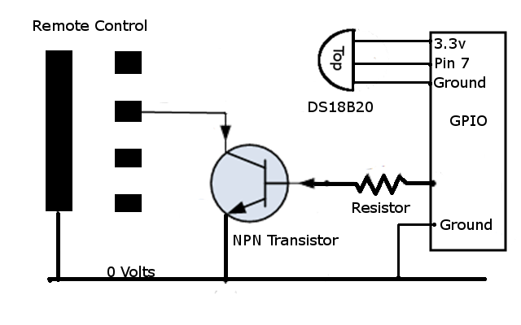

These instructions are given in good faith but the modifications and circuits are constructed and employed entirely at your own risk. Only modify a low voltage hand held remote and make sure you have a spare backup device should you need it.
Extract the 'HomeAuto.zip' file to a temp directory on a local machine. Copy the 'HomeAuto' folder to the Pi's '/home/pi/Public' folder using a file transfer utility such as WinSCP. Using a remote terminal such as PuTTY, navigate to the HomeAuto folder on the Pi 'cd ./Public/HomeAuto'
To load the required packages enter
npm install
You can start the app using the package manager by entering
npm start
Or you can use the command line
sudo node index.js
The URL will be the Pi's IP address followed by 3000. Something like '192.168.1.8:3000'.The app will run in debug mode and the temperature displayed the browser is actually the 'seconds' part of the current time. To run run live, edit the config.json and change 'debug' to 'production'.
To exit the app, press the ctrl key and the 'C' key at the same time. To run the test files enter.
npm test
The sensor’s data pin has to be connected to physical pin 7 on the Pi and pin 7 needs to have its pull up resistor set. You can connect the supply pin to either 3.3v or 5v. With a long lead on the sensor, it’s probably best to use the 5 volt supply because of the voltage drop along the lead.
The usual arrangement for the remote is that the buttons short their output to a common ground when they are pressed. You need to check this for yourself with a digital multi-meter. The choice of NPN transistor and the base current resistor’s value is not critical, 4.7k for the resistor should be fine. It needs to be low enough to turn the transistor fully on when the port pin goes high but not so low that it overloads the output port. The voltage drop across the base/emitter junction is a constant 0.7v. So a 4.7k resistor dropping 3.3-0.7=2.6v will result in a base current of about 0.5 milliamps flowing. The sample app uses pins 11,12,13,15 on the Pi. The diagram below just shows the connections for one pin and one transistor but, of course, you actually need 4 transistors. It’s a good idea to take the battery out of the remote before soldering the contacts and to scrape the insulation off the circuit board where you going to solder. Solder slightly to one side of the pads so the buttons still function.
